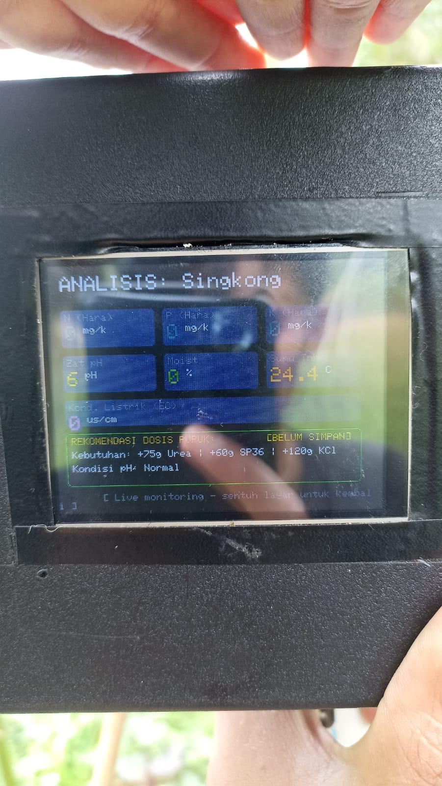

01 · Proyek skripsi · 2026
SIMONTA — Sistem Monitoring Hara Tanah
Merancang sistem portabel untuk memantau kondisi hara tanah dan menyajikan rekomendasi pemupukan presisi. Sistem menggabungkan perangkat IoT dan Web SIG untuk pemetaan hasil di Kecamatan Sapuran, Kabupaten Wonosobo.